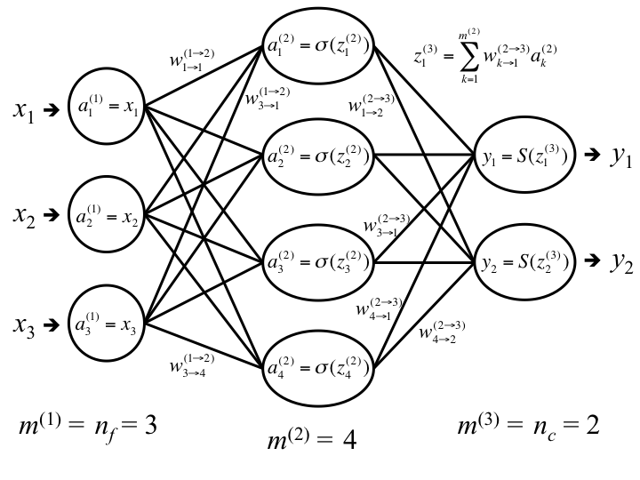

Matrix dimensions in feedforward neural network
Working out matrix dimensions using the rules of matrix multiplication April 2, 2018
I read tutorials about neural networks, I used the scikit-learn and tensorflow implementations, but when I tried to implement one myself from scratch, I realised I still had several questions like:
- What are the dimensions of the weights matrix for each layer?
- In what order should I multiply the matrices?
- In what circumstances should I transpose one or other of the matrices before taking the product?
- What about the rows or columns corresponding to the bias nodes? When should I exclude or include them?
You can look that stuff up and copy it blindly, but you can also work it out for yourself using the rules of matrix multiplication, as below.
Quick recap of feedforward neural networks
I'm going to assume you already know the basic principles of how feedforward neural networks work, but you still have some questions about how to implement one in practice... Let's look at a classification problem, and define some notation.
Input and output
Input data contains $n_{f}$ features and we're going to feed $n$ training samples through the network. The input matrix $X$ has dimensions $n \times n_f$, (n_samples * n_features, one row for each sample, one column for each feature).
Output data is one of $n_c$ classes. We use a one-hot encoder, therefore the output matrix $Y$ has dimensions $n \times n_c$ (n_samples * n_classes, one row for each sample, one column for each class).
We'll use $i$ to iterate over nodes/features/classes and $j$ to iterate over samples.
Notation
In the input layer, for node (feature) $i$ and sample $j$, $a^{(1)}_{ij} = x_{ij}$. Values are then forward-propagated through the network using an alternating sequence of linear combinations and non-linear transformations.
For the sample $j$, the input $z_{ij}^{(l)}$ to node $i$ in layer $l$ is a linear combination with parameters $w$ of the outputs $a$ of all nodes in layers $l-1$:
$z_{ij}^{(l)} = \sum\limits_{k=1}^{m^{(l-1)}} w_{ik}^{(l-1\rightarrow l)} a_{kj}^{(l-1)}$
where $w_{ik}^{(l-1\rightarrow l)} = w_{k\rightarrow i}^{(l-1\rightarrow l)}$ is the weight for going from node $k$ in layer $l-1$ to node $i$ in layer $l$, and $m^{(l-1)}$ is the number of nodes in layer $l-1$.
This is followed by a non-linear transformation with no parameters:
$a_{ij}^{(l)} = \sigma(z_{ij}^{(l)})$
where $\sigma(z)$ (the activation function) is for example a sigmoid, tanh, softmax or other function with the properties: non-linear, differentiable, monotonic.
Finally the output $y^{(L)}_{ij} = a_{ij}^{(L)}$, where L is the total number of layers, including input, hidden and output layers. (Notice that we numbered the layers starting from 1.)
Using matrix multiplication rules to work out dimensions
Now how to write the above equations in matrix form, so we can easily forward-propagate many samples at once?
In the matrix multiplication product $\mathbf{BC}$, for any two matrices $\mathbf{B}$ and $\mathbf{C}$, each element of the new matrix is the scalar product of a row from $\mathbf{B}$ and a column from $\mathbf{C}$.
$\mathbf{D}_{ij} = \sum\limits_{k=1}^m \mathbf{B}_{ik}\mathbf{C}_{kj}$
where $m$ is the number of columns in $\mathbf{B}$ and the number of rows in $\mathbf{C}$. (They have to be the same, otherwise we can't multiply the two matrices!)
Now coming back to our neural network, let's say for example we want to calculate the input for node $i$ and sample $j$ in layer 2. We said above that was:
$z_{ij}^{(2)} = \sum\limits_{k=1}^{m^{(1)}} w^{(1\rightarrow 2)}_{ik}a_{kj}^{(1)}$
where $m^{(1)}$ is the number of nodes in the previous layer and $a_k$ is the output of node $k$ in the previous layer, and $w$ is from the weight matrix $\mathbf{W}^{(1\rightarrow 2)}$. Remember that $w_{ik}$ is $w_{k\rightarrow i}$, the weight for going from node $k$ in one layer to node $i$ in the next layer.
So we've got some obvious correspondances between the matrix multiplication equation and the neural network equation. And we know we want to take the product between a matrix $\mathbf{W}$ containing the weights and a matrix $\mathbf{A}$ containing the activations. What are the dimensions of these matrices?
By the rules of matrix multiplication, to get a matrix of dimensions $m^{(2)} \times n$, we must multiply matrices of dimensions $m^{(2)} \times ?$ and $? \times n$, in that order.
We know that $\mathbf{A}$ and $\mathbf{Z}$ have to have coherent dimensions, e.g. if $\mathbf{A}^1$ has dimensions $m^{(1)} \times n$ (n_nodes_in_layer_1 * n_samples), then $\mathbf{Z}^2$ has dimensions $m^{(2)} \times n$ (n_nodes_in_layer_2 * n_samples), and not $n \times m^{(2)}$.
Let's try setting the dimensions like that ($\mathbf{A}$ has dimensions $m^{(1)} \times n$ and $\mathbf{Z}$ has dimensions $m^{(2)} \times n$).
So $\mathbf{W}$ must have dimensions $m^{(2)} \times m^{(1)}$, and our matrix multiplication will be
$\mathbf{Z}^2 = \mathbf{W}^{(1\rightarrow 2)}\mathbf{A}^1$
Now what are the entries inside each matrix?
In $\mathbf{Z}$ and $\mathbf{A}$, each row is a node and each column is an sample. In $\mathbf{W}$, we need:
$\mathbf{W} = {\begin{bmatrix} w_{11} & w_{12} & \cdots & w_{1m^{(1)}}\\ w_{21} & w_{22} & \cdots & w_{2m^{(1)}}\\ \vdots & \vdots & \ddots & \vdots\\ w_{m^{(2)}1} & w_{m^{(2)}2} & \cdots & w_{m^{(2)}m^{(1)}}\\ \end{bmatrix}}$
where $w_{ik}$ is $w_{k\rightarrow i}$, the weight for going from node $k$ in one layer to node $i$ in the next layer.
Let's check this matrix multiplication really does what we want.
In the matrix $\mathbf{Z}$, what is the entry $z_{ij}$, the input for node $i$ and sample data point $j$? Following the rules of matrix multiplication, we take the dot product of row $i$ of $\mathbf{W}$ and column $j$ of $\mathbf{A}$.
Row $i$ of $\mathbf{W}$ contains the vector ${\begin{bmatrix} w_{i,1} & w_{i,2} & \cdots & w_{i,m^{(1)}}\end{bmatrix}}$.
Column $j$ of $\mathbf{A}$ contains the vector $\begin{bmatrix} a_{1,j} \\ a_{2,j} \\ \vdots \\ a_{m^{(1)},j}\end{bmatrix}$ (the outputs of all nodes in the previous layer, for the sample $j$). So now
$z_{ij} = \sum\limits_{k=1}^{m^{(1)}} w_{ik} a_{kj}$
the result we wanted!
But what if we'd switched everything around?
What if $\mathbf{A}$ has dimensions $n \times m^{(1)}$, $\mathbf{Z}$ has dimensions $n \times m^{(2)}$ and the matrix multiplication is $\mathbf{Z = AW}$?
Now we need a $\mathbf{W}$ matrix of dimensions $m^{(1)} \times m^{(2)}$. So let's transpose our previous $\mathbf{W}$:
$\mathbf{W} = {\begin{bmatrix} w_{11} & w_{12} & \cdots & w_{1m^{(2)}}\\ w_{21} & w_{22} & \cdots & w_{2m^{(2)}}\\ \vdots & \vdots & \ddots & \vdots\\ w_{m^{(2)}1} & w_{m^{(2)}2} & \cdots & w_{m^{(1)}m^{(2)}}\\ \end{bmatrix}}$
where $w_{ki}$ is now $w_{k\rightarrow i}$, the weight for going from node $k$ in one layer to node $i$ in the next layer
Now let's test the matrix multiplication $\mathbf{Z = AW}$. Let's find the entry $z_{ji}$ in matrix $\mathbf{Z}$, the input for node $i$ and sample data point $j$. Note that we're still using $j$ to iterate over samples and $i$ to iterate over nodes, as before, so now the entry we're interested in is labelled $z_{ji}$ (because by convention matrix indexing is always row-first, column-second).
This time we're taking row $j$ of $\mathbf{A}$ and row $i$ of $\mathbf{W}$. Each row of $\mathbf{A}$ contains one sample now.
$z_{ji} = \sum\limits_{k=1} ^ {m^{(1)}} a_{jk} w_{ki}$
So it still works!
Note that however, this doesn't mean you can just keep transposing and switching around your matrices until you find a combination that works! If some of your matrices happen to be square, you might find a combination that doesn't make your code crash but nevertheless produces nonsense...
Personally I prefer the first formulation because it's more conventional for the weight entry $w_{1,2}$ to be $w_{2\rightarrow 1}$ and not $w_{1\rightarrow 2}$.
Input and output matrix dimensions
Our input matrix $\mathbf{X}$ usually has dimensions $n \times n_f$, (n_samples * n_features), if it comes e.g. from a dataframe with features as column headers and a row for each sample.
For the same reasons, the matrix $\mathbf{Y}$ usually has dimensions $n \times n_c$ (n_samples * n_classes).
But above, we saw the $\mathbf{Z}$ and $\mathbf{A}$ matrices had dimensions $m^{(l)} \times n$ (n_nodes_in_layer_l * n_samples).
So we'll have to transpose the matrix $\mathbf{X}$ before feeding it into the network, and transpose the matrix $\mathbf{Y}$ at the end.
Biases
Now what if we want to add a bias node to every layer? We can either put the biases in a separate array, or add them to the weights arrays and add a corresponding vector of ones to $\mathbf{A}$. But should we add a row or a column, at the start or the end of the matrix? Also, bias nodes have output but no input, and they don't contribute to gradient descent. So when should we include them and when should we exclude them? That's an entry for another day!